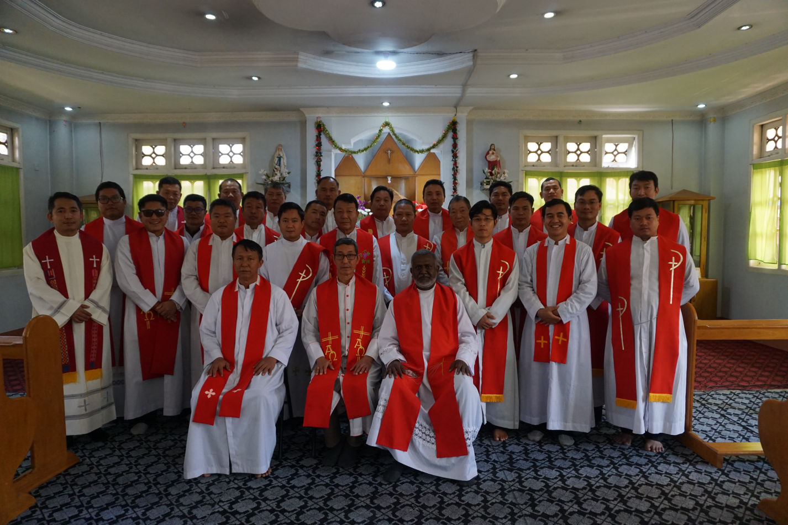

Annual Retreat & Meeting of Clergy

Priestly Annual Retreat was made on 4-6 of February 2020, and followed with Annual Meeting for two days.
4-8 February 2020
Priestly Annual Retreat was made on 4-6 of February 2020, and followed with Annual Meeting for two days.
21 February 2020
Blessing of a new SFX Convent and signing of MOUs between the Diocese of Banmaw and SFX Congregation, Laiza Parish and SFX Community was made on February 20-21, 2020.
25-26 February 2020
The second Workshop of Diocesan Women Association was made on the 25-26th of February, 2020, in which Vision, Mission, Objectives and Action Plans were drawn, and the Statutes of the Association was drafted.
19 March 2020
On the 19th of March 2020 which is the feastday of St. Joseph, thanksgiving Mass was celebrated on the occasion of Closing the academic year of 2019.
03 May 2020
Taking canonical poccession and transfer of Ting Sing parish was made during the installation Mass on the 3rd of May, 2020. The celebration and formalities of installation were conducted at the present of Vicar General, Msgr. John Jangma Yung Wa.
St. Patrick's Cathedral
Kokko Taw qtr., Bhamo 01131
Kachin State, Myanmar
+95 (74) 50453